Callisto Wellness & Spa by Spa Soul
Cunda Callisto Hotel & Spa · Cunda · Ayvalik
Feel Well
 Hamam
Hamam İmza Bakımlar
İmza Bakımlar Klasik
Klasik Yolculuk
Yolculuk Ritüeller
RitüellerLook Well
 Vücut
Vücut Yüz
YüzOffering relaxation and rejuvenation for both body and mind with its SPA, wellness, and fitness facilities, Callisto Hotel welcomes its guests at Callisto Wellness & SPA, one of Turkey’s leading SPAs.
ÖNERİLEN SPA KULLANIM SIRALAMASI VE SÜRELERİ
1. Türk Hamamı
Sıcaklığı yaklaşık 45-50°C civarında olan Türk Hamamı'nda geleneksel yıkanma deneyimini yaşarken, 15 dakikalık bir süre içinde vücudunuzu tüm SPA aktivitelerine hazırlamış olacaksınız.
- Uyarı: Kalp, tansiyon, solunum rahatsızlığı olan ve hamile misafirlerimizin bu alanı kullanmalarını önermiyoruz.
- Süre: 15 Dakika
2. Magnezyum Havuzu
32°C civarındaki su ısısı ile birlikte, içerdiği tuz ve magnezyum ile cildiniz üzerinde iyileştirici bir etki yaratırken, kaslarınızı gevşeterek rahatlamanızı sağlar.
- Süre: 10 Dakika
3. Kapalı Yüzme Havuzu
Vücut ısınızı dengelemek ve hijyen açısından uygun bir kullanım sağlamak için, havuza girmeden önce duşları kullanmanız önerilir. Havuzu 10-15 dakika süreyle kullanmanız, hem fiziksel rahatlama hem de diğer SPA uygulamalarına hazırlık açısından faydalı olacaktır.
- Süre: 10-15 Dakika
4. Lavander Steam
Lavanta esansının rahatlatıcı kokusunu soluyacağınız bu buhar odası, cildinizi arındırırken aynı zamanda kaslarınızı gevşetir, vücudunuzu dengeleyip canlandırır. Oda sıcaklığı 45-50°C, nem oranı ise %100 civarındadır.
- Uyarı: Kalp, tansiyon, solunum rahatsızlığı olan ve hamile misafirlerimizin bu alanı kullanmalarını önermiyoruz.
- Süre: 10 Dakika
5. Solfog
Yüksek saflıkta yoğun tuzlu su ile oluşturulan 24°C sıcaklığındaki deniz iklimi, solunum ve cilt hastalıklarının tedavisinde destekleyici ve iyileştirici etkiler sunmaktadır.
- Süre: 10 Dakika
6. Tepidarium
Tüm yüzeyi homojen olarak 38°C civarında ısıtılmış ergonomik tasarımlı taş yataklar, zihinsel ve bedensel olarak rahatlayıp gevşemenizi sağlar. Kullanım sırasında havlu veya bornoz bulundurmanız önerilir.
- Süre: 15 Dakika
7. Steam Citrus
Narenciye esanslı bir koku oluşturan buhar odamız, cildinizi arındırırken kaslarınızı gevşetip enerjik hissetmenizi sağlar. Oda sıcaklığı 45-50°C civarındadır ve %100 nem oranına sahiptir.
- Uyarı: Kalp, tansiyon, solunum rahatsızlığı olan ve hamile misafirlerimizin bu alanı kullanmalarını önermiyoruz.
- Süre: 10 Dakika
8. Aqua Tropica
Girişteki soğuk su kovası ve duş, sauna ve buhar odası kullanımından sonra kan dolaşımınızı dengelemek için idealdir. Koridorda yürürken, kendinizi egzotik meyve aromalı tropikal bir yağmurun altında bulacaksınız; bu deneyim, ışık ve ses efektleriyle zenginleştirilmiştir. Ardından, soğuk su kovasını kullanarak vücudunuza şok etkisi yaratabilirsiniz. Devamında, farklı ışık ve ses efektleri eşliğinde nane aromalı soğuk ve sisli bir yağmur deneyimi yaşayacak, sonrasında sıcak duşların masaj etkisi ile rahatlayacaksınız. Son olarak, kendinizi egzotik meyve kokuları, gök gürültüsü ve şimşekler eşliğinde tropikal bir fırtınanın içinde hissedeceksiniz.
9. Sauna Birch
Huş ağacı yaprak aromasını içinize çekerken hissettiğiniz huzur ile birlikte doğal antiseptik etkilerini alıp ödem atarak rahatlayacağınız gerçek bir sauna deneyimidir. Sıcaklığı yaklaşık 90°C ve nem oranı 15-25 seviyelerinde olan bu saunayı kullanmanızı tavsiye ederiz.
- Uyarı: Kalp, tansiyon, solunum rahatsızlığı olan ve hamile misafirlerimizin bu alanı kullanmalarını önermiyoruz.
- Süre: 10-15 Dakika
10. Ice Fountain
Buz çeşmesi özel tasarımı ve aydınlatmasıyla, bu odayı benzersiz bir ferahlama alanı haline getirir. Buz çeşmesinden akan buz parçalarını özellikle eklem bölgelerine masaj yapmak için kullanmak, kan dolaşımınızı düzenlemeye ve vücut ısınızı dengelemeye yardımcı olur. Oda sıcaklığı ise yaklaşık 14-16°C'dir.
Bilgi
Mithatpaşa, Mevlana Cd. No:68
10405 Cunda
Ayvalik, Türkiye
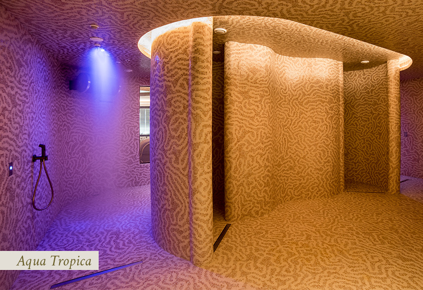
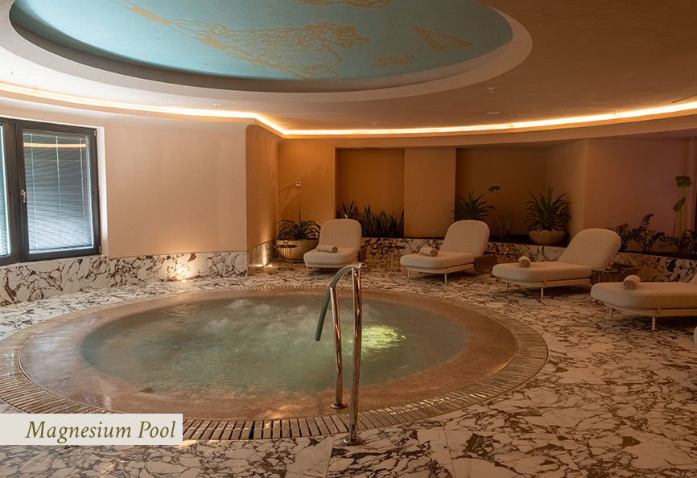
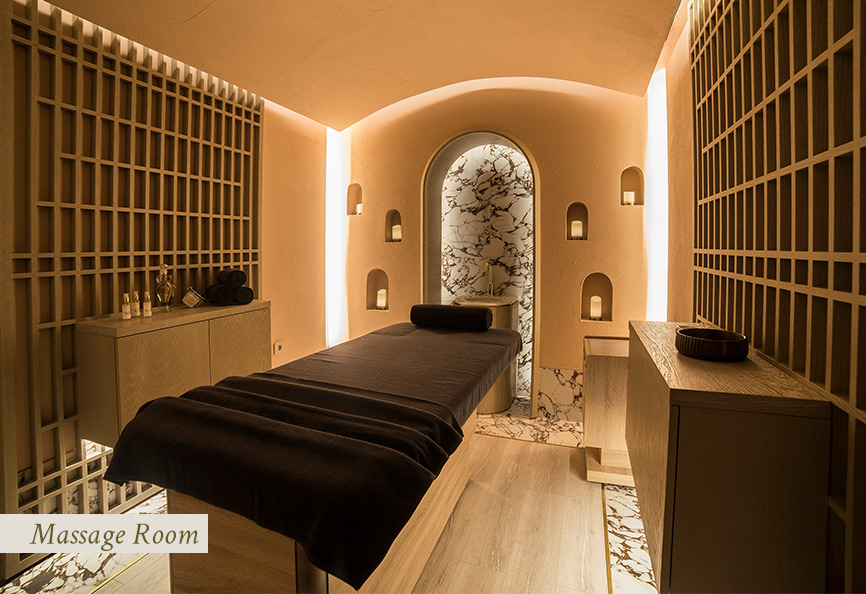
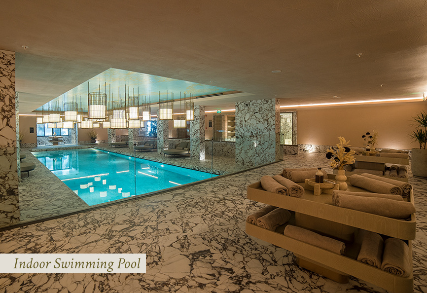
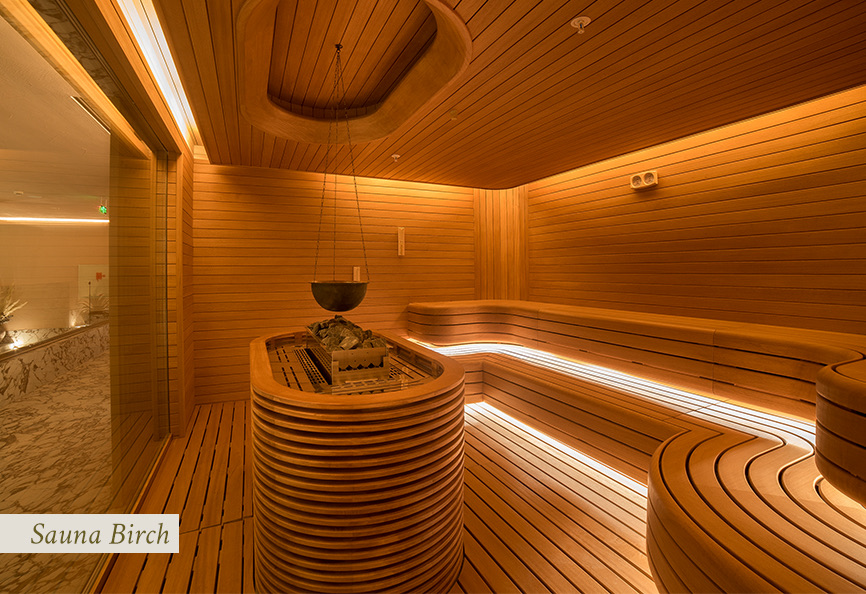
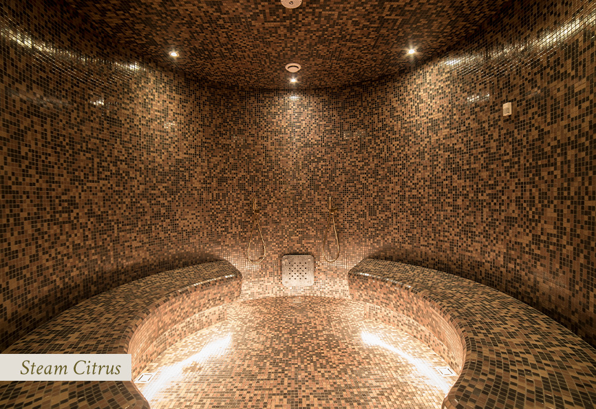
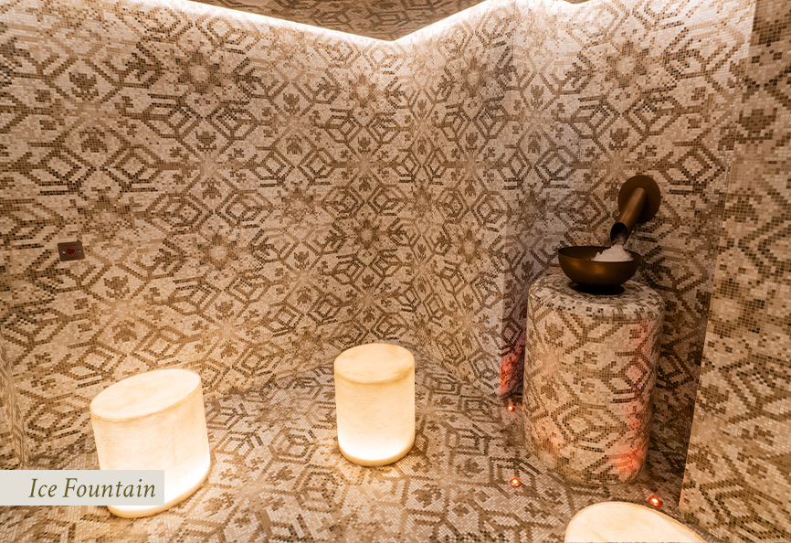
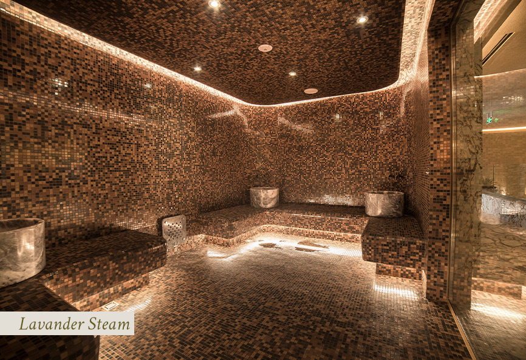
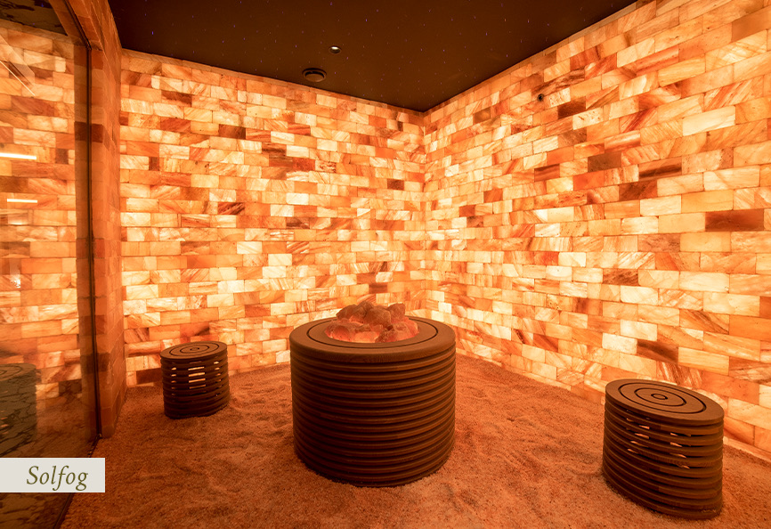
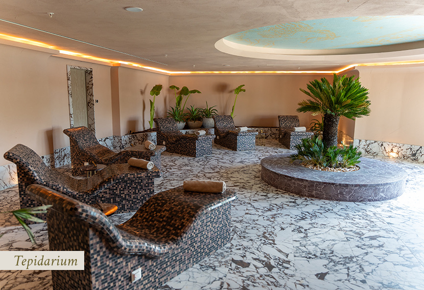
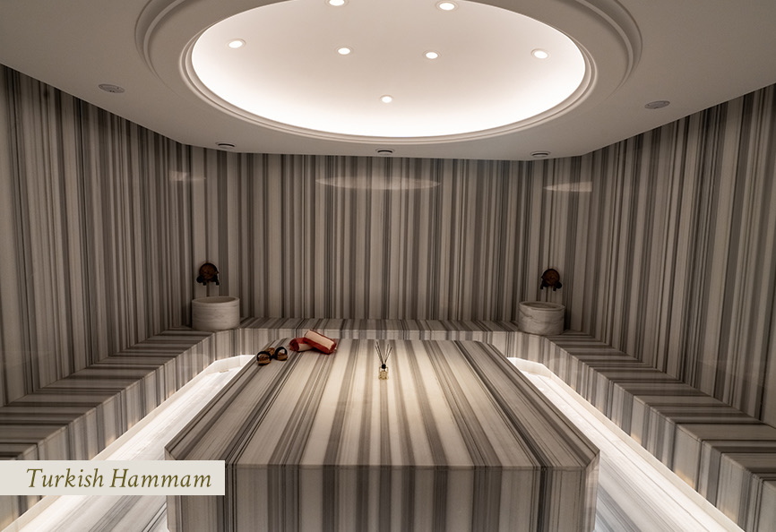
Rezervasyon Kuralları
Spaya olan yoğun ilgiden dolayı önceden bakım veya masaj rezervasyonu yaptırmanızı öneririz.
Lütfen bakımınızın başlangıç saatlerinden en az 5 dakika önce, SPA resepsiyonda hazır olunuz. Unutmayınız ki, rezervasyonunuza geç kaldığınız takdirde, bakımınızın süresi de buna bağlı olarak kısalacaktır. Geç kaldığınızda sizden sonra rezervasyonu olan misafirimizin başlangıç saatini aksatmamak için bakımınızı belirtilen sürede bitirmek durumundayız. Anlayışınız için şimdiden teşekkür ederiz.
Herhangi bir sebepten dolayı randevunuzu iptal ettirmek istiyorsanız, masaj, bakım rezervasyonlarınızın iptallerini en geç 5 saat öncesinden, paket programı rezervasyonlarınızın iptallerini en geç 48 saat öncesinden Spa resepsiyona bildirmenizi rica ederiz. Bildirmediğiniz takdirde toplam ücretin %100’ü hesabınıza eklenecektir.
Ne Giymeli
Mayo, bikini, şort giymeniz rica olunur. Rahat edebilmeniz için odanızda bulunan kimono ve terliklerden faydalanabilirsiniz. Havlular SPA alanında mevcuttur.
Seansınız boyunca tarafımızca tedarik edilen tek kullanımlık iç çamaşırı tercih edilmesi tavsiye edilir.
Değerli Eşyalar
Değerli eşyalarınızı otel odanızda bulunan kasada bırakmanızı öneririz. Kayıplardan otel yönetimi sorumlu değildir.
Spa Bakımının Seçimi
Tüm SPA hizmetlerimiz menümüzde yer almaktadır. Seçiminizi yaparken destek ve tavsiye almak isterseniz SPA resepsiyonuna danışabilirsiniz.
Ses & Gürültü
Hem sizin hem de diğer misafirlerimizin dinlendirici SPA deneyiminden faydalanabilmesi için yüksek sesle konuşulmaması, yüksek ses çıkaracak davranışlarda bulunulmaması rica olunur.
SPA Havuzları
Hijyen kurallarımız gereği, SPA alanındaki havuzlara girmeden önce duş almanız gerekmektedir. Ayrıca havuzlara atlamak tehlikeli ve yasaktır.
Yaş Sınırı
Otelimizde konsept gereği 14 yaş ve üzeri misafirleri ağırlayabilmekteyiz. Misafirlerimizin cilt bakımlarından faydalanmak için en az 18 yaşında olmaları gerekmektedir.
Cep Telefonu Kullanımı
SPA alanlarında sessiz ve huzurlu bir ortam sağlanması için cep telefonlarınızın odanızda bulunan kasa içerisinde bırakılması rica olunur.
Özel Sağlık Durumları
Özel bir sağlık durumunuz varsa veya hamileyseniz size en uygun ve sağlıklı hizmeti verebilmemiz için rezervasyon aşamasında belirtmeniz rica olunur. SPA’daki sauna ve buhar banyo sıcaklıkları 45˚C ile 90˚C arasında değişmektedir. Kalp, tansiyon ve solunum yolu rahatsızlığı olanlara ve hamile misafirlerimize yüksek ısı ve nem seviyesine sahip uygulamaların kullanılması önerilmemektedir. Kullanılması durumunda, sorumluluk kendilerine aittir.
Kişisel Tercih & İstekler
Oda sıcaklığı veya masajın baskı seviyesi gibi tercih ve özel isteklerinizi SPA resepsiyon görevlilerine ve terapistlere belirtebilirsiniz.
Ürünler
Masajlar esnasında kullanılan doğal yağ ve bakım ürünlerini SPA alanı içerisinde yer alan Callisto Shop’tan satın alarak SPA keyfinizi evinize taşıyabilirsiniz.
Terapist Seçimi
Özel bir terapist tercihiniz olması durumunda 48 saat öncesinden SPA resepsiyonuna bilgi vermeniz rica olunur.
Genel
Masajdan önce, havuzları ve buhar banyolarını kullanmanızı tavsiye ederiz. SPA kullanımından sonra masaj ve bakıma başlamadan önce vücudunuzu arındırmak için duş almanızı tavsiye ederiz.
SPA kullanımı için SPA Menüde bulunan Önerilen SPA Kullanım Sıralaması ve Süreleri bölümündeki adımları takip edebilirsiniz.
Yüksek ısıda vücudunuzdaki su kaybını, bol miktarda su içerek engelleyebilirsiniz. Isıya çok alışık değilseniz, başlangıçta, kendinizi yorgun ve uykulu hissedebilirsiniz. Vücudunuz alıştıkça normale dönecektir.
Masajdan en az 1,5 saat önce yemek yemiş olmanızı tavsiye ederiz.
Bazı vücut bakımları öncesinde de vücut peelingi almanızı veya geleneksel Türk Hamamı’nda kese yaptırmanızı öneririz.
Bazı vücut ve yüz bakımlarının ardından SPA ıslak alanlarını kullanmamanız gerekmektedir. Günlük SPA programınızı bu bilgiyi göz önünde bulundurarak organize etmenizi rica ederiz
Masaj ve bakımlarınızdan sonra SPA bölümündeki dinlenme alanlarında dinlenmenizi öneririz.
Diğer misafirlerimizi rahatsız edecek şekilde gürültü yapan ve uygunsuz davranışlarda bulunan misafirlerimizin SPA kullanımı ve bakımları sonlandırılacaktır.